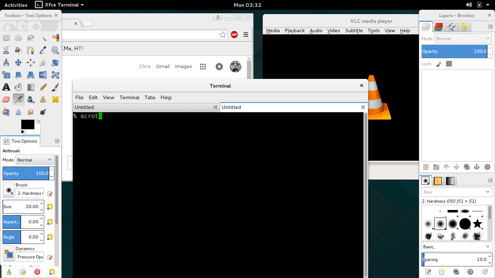
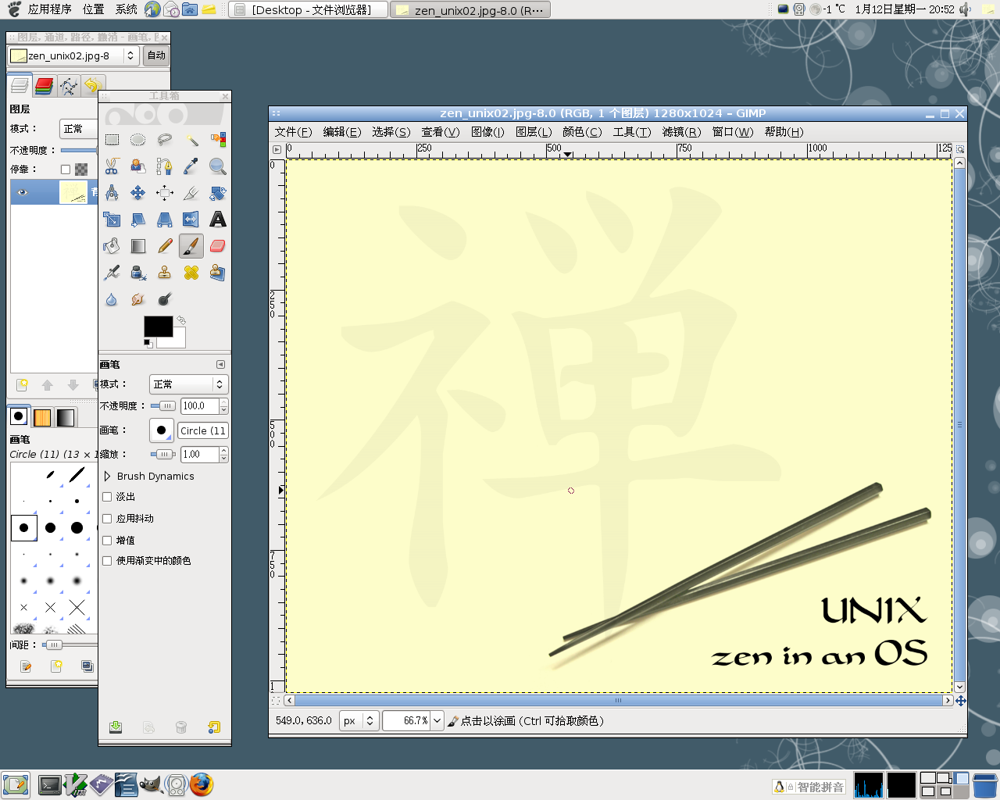
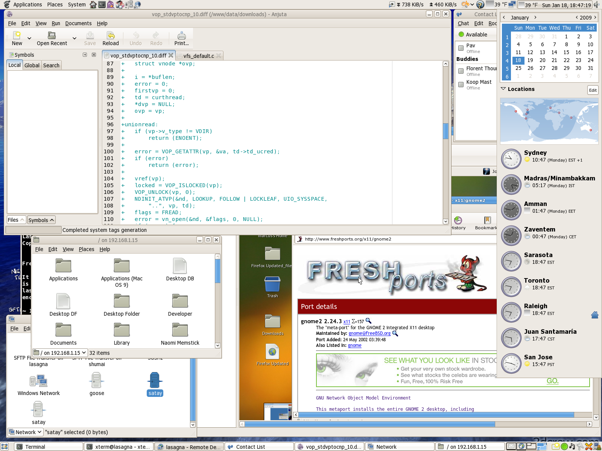
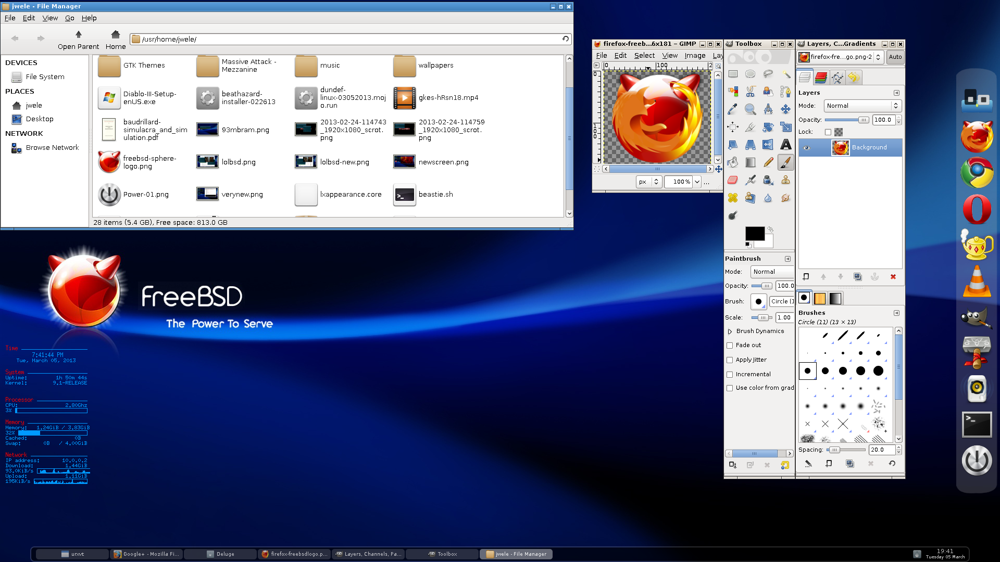

Содержание
FreeBSD — свободная операционная система семейства UNIX, потомок AT&T Unix по линии BSD, созданной в университете Беркли
FreeBSD разрабатывается как целостная операционная система. Исходный код ядра, драйвера устройств и базовых пользовательских программ, таких как командные оболочки и т. п., содержатся в одном дереве системы контроля версиями (до 31 мая 2008 — CVS, позже — SVN, а сейчас — Git). Это отличает FreeBSD от GNU/Linux — другой свободной UNIX-подобной операционной системы, в которой ядро разрабатывается одной группой разработчиков, набор пользовательских программ — другими (например, проект GNU). А многочисленные группы собирают это всё в единое целое и выпускают в виде различных дистрибутивов Linux.
FreeBSD хорошо зарекомендовала себя как система для построения интранет- и интернет-сетей и серверов. Она предоставляет надёжные сетевые службы и эффективное управление памятью.
Помимо своей стабильности, FreeBSD популярна и благодаря своей лицензии, которая существенно отличается от широко известной лицензии GNU GPL. Лицензия BSD позволяет использовать код не только в свободном ПО, но и в проприетарном. В отличие от GNU LGPL, которая требует раскрытия исходных кодов, лицензия BSD является более простой и непритязательной, требуя лишь упоминания заимствования, авторства и отказ от навязывания ответственности (нельзя отсылать пользователей своего продукта к авторам заимствованного кода).
История
Разработка FreeBSD началась в 1993 году с быстрорастущего набора патчей пользователей системы 386BSD. Этот набор позже вырос и отделился от 386BSD в отдельную операционную систему, включив в себя код от Free Software Foundation. Первая официальная версия FreeBSD 1.0 вышла в декабре 1993 года. Walnut Creek CDROM согласилась распространять FreeBSD на компакт-диске и также предоставила для работы проекту отдельный компьютер с интернет-соединением. Затем, в мае 1994 года, последовал успешный выпуск FreeBSD 1.1.
Однако, из соображений законности использования исходных кодов BSD Net/2 в 386BSD, команда разработчиков FreeBSD переработала большую часть системы ко времени выпуска FreeBSD 2.0 в январе 1995 года, используя 4.4BSD-Lite. Руководство к FreeBSD содержит более подробную историческую информацию о происхождении системы.
Модель разработки FreeBSD
Существует около 4000 разработчиков, которые работают над системой на добровольной основе. Все они могут читать дерево репозитория, но не могут вносить изменения. Вместо этого разработчик обращается к коммитеру, который имеет право вносить изменение в код. Существует около 400 коммитеров. Разработчик может вырасти по социальной лестнице проекта и стать коммитером. Кандидатуру нового коммитера предлагает к рассмотрению ментор будущего коммитера. В зависимости от основной области деятельности, новый коммитер утверждается основной командой, portmgr@ или docmgr@. Основная команда является административным ядром проекта и состоит из 9 человек, которые выбираются на 2 года коммитерами из своего состава. Основная команда решает конфликты между коммитерами.
Участники проекта разрабатывают ветку CURRENT («текущая» версия) и несколько STABLE («стабильная», стабильность означает гарантию неизменности интерфейсов, как то API, ABI и так далее).
Новый код помещают в ветку CURRENT, где он получает более широкое тестирование. Новые функции, добавленные в CURRENT, могут остаться в системе или от них могут отказаться, если реализация окажется неудачной. Иногда эта версия может оказаться в непригодном для использования состоянии. С началом использования perforce как вспомогательного репозитория, и с выделением projects/ области в svn, проект стремится гарантировать постоянную работоспособность CURRENT.
STABLE-версия содержит только те нововведения, которые прошли проверку в CURRENT. Тем не менее, эта версия тоже предназначена, в основном, для разработчиков. Не рекомендуется обновлять ответственные рабочие серверы до STABLE, предварительно её не протестировав. На основе STABLE регулярно создаются тщательно протестированные разработчиками, группой release-инженеров и более широким кругом пользователей RELEASE-версии.
После выпуска релизов создаются дополнительные ветви разработки для поддержки релизов, но в них вносятся лишь самые необходимые изменения, исправляющие серьёзные ошибки или проблемы с безопасностью системы. До четвёртой версии FreeBSD у стабильной и текущей веток был один и тот же старший номер версии. Затем текущей ветви был присвоен номер 5, а у стабильной остался номер 4.
В настоящее время поддерживаются стабильные ветви разработки 9-STABLE, 10-STABLE и 11-STABLE. На данный момент, группа разработчиков активно работает над версией 13.0-CURRENT.
Второй уровень поддержки для систем i386 подразумевает продолжение формирования установочных сборок, бинарных обновлений и готовых пакетов, но не гарантирует решение специфичных проблем.
Среди причин снижения уровня поддержки для архитектуры i386 указывается доминирование 64-разрядных систем x86 и снижение популярности 32-разрядных установок, число пользователей которых сократилось до уровня других арихитектур второго уровня.
Подготовлен первый бета-выпуск FreeBSD 13.0. Выпуск FreeBSD 13.0-BETA1 доступен для архитектур amd64, powerpc64, powerpc64le, powerpcspe, aarch64 и riscv64. Дополнительно подготовлены образы для систем виртуализации (QCOW2, VHD, VMDK, raw) и облачных окружений Amazon EC2. Сборки для i386 и 32-разрядных плат ARM не сформированы.
Порты и пакеты
В настоящее время FreeBSD предоставляет пользователю две взаимодополняющие технологии установки программного обеспечения сторонних разработчиков: коллекция портов FreeBSD и бинарные пакеты с программным обеспечением. Любая из этих систем может быть использована для установки самых последних версий приложений с локальных носителей или прямо из сети.
Коллекция портов, как подсистема сборки и сопровождения устанавливаемых программ, периодически обновляется. Сейчас она насчитывает порядка 32 тысяч портированных на FreeBSD программ, среди которых: графические среды GNOME, KDE5, Xfce, Enlightenment, офисные приложения и пакеты Apache OpenOffice, LibreOffice, система поддержки печати CUPS, программы доступа в интернет Mozilla Firefox и Thunderbird, Chromium, системы управления базами данных PostgreSQL, MySQL, комплекты Java-разработки OpenJDK, среды разработки Eclipse и NetBeans, мультимедийные плееры MPlayer и VLC. Инфраструктура интерпретируемых языков представлена Perl, Python, Ruby, Lua и другими ЯП.
Совместимость с оборудованием
Поддерживаемые устройства перечислены в документе FreeBSD 12.1-RELEASE Hardware Notes. Другие конфигурации также могут работать, но пока ещё не были протестированы. Списки поддерживаемых идентификаторов устройств доступны в стороннем репозитории.
В 2020 году был представлен новый проект для автоматического сбора информации о протестированных конфигурациях оборудования.
FreeBSD jail
FreeBSD Jail (англ. jail — «тюрьма») — механизм виртуализации в системе FreeBSD, позволяющий создавать внутри одной операционной системы FreeBSD несколько независимо работающих FreeBSD на том же ядре операционной системы, но совершенно независимо настраиваемых с независимым набором установленных приложений.
В основу FreeBSD Jail вошёл системный вызов chroot(2), при котором для текущего процесса и всех его потомков, корневой каталог переносится в определённое место на файловой системе. При этом это место для процесса становится корневым каталогом. Таким образом, изолированный процесс может иметь доступ только к низлежащему дереву каталогов.
Однако FreeBSD Jail также имеет поддержку на уровне ядра, что позволяет ограничивать доступ к сети, общей памяти, переменным ядра sysctl и ограничивать видимость процессов вне jail.
Процесс, заключённый в Jail, может иметь доступ только к определённым IP-адресам операционной системы и использовать определённый hostname. Такой процесс называется «изолированный процесс» или «Jailed-процесс».
Таким образом, создаётся безопасная «клетка», внутри которой можно исполнять даже потенциально опасное программное обеспечение, которое не сможет никак повредить основной системе или другим таким же «клеткам». До версии 9.0-RELEASE, FreeBSD Jail не имела средств контроля по использованию ресурсов (как это делает, например, OpenVZ под Linux). С версии 9.0-RELEASE, подобные механизмы были введены через утилиту rctl(8) и фреймворк RACCT.
Ссылки
- FreeBSD: freebsd.org
- Github: github.com/freebsd